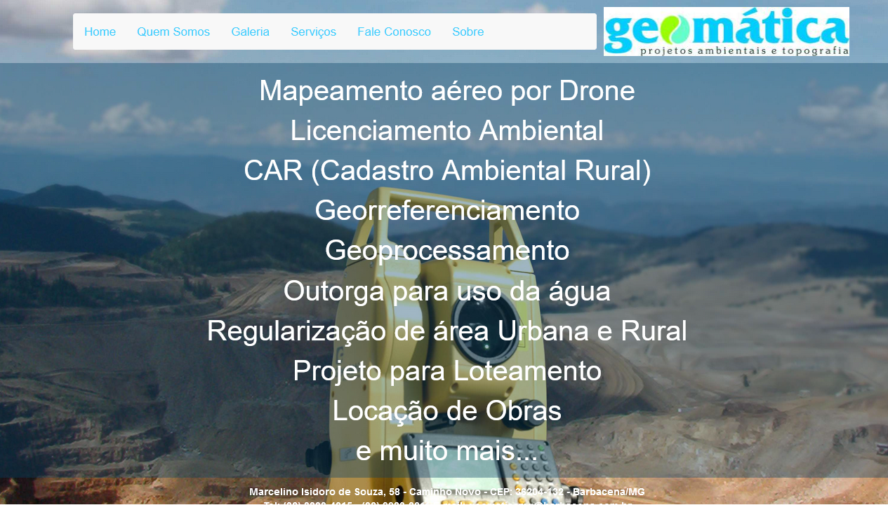

Primeiro jogo desenvolvido por mim, baseado no popular jogo de cartas "Blackjack", ou "21" como é conhecido no Brasil.
Tecnologias usadas: CSS, HTML5 e JavaScript
Tecnologias usadas: CSS e HTML5
Tecnologias usadas: CSS, HTML5 e JavaScript

GEOMÁTICATeconologias usadas: WebAcappella